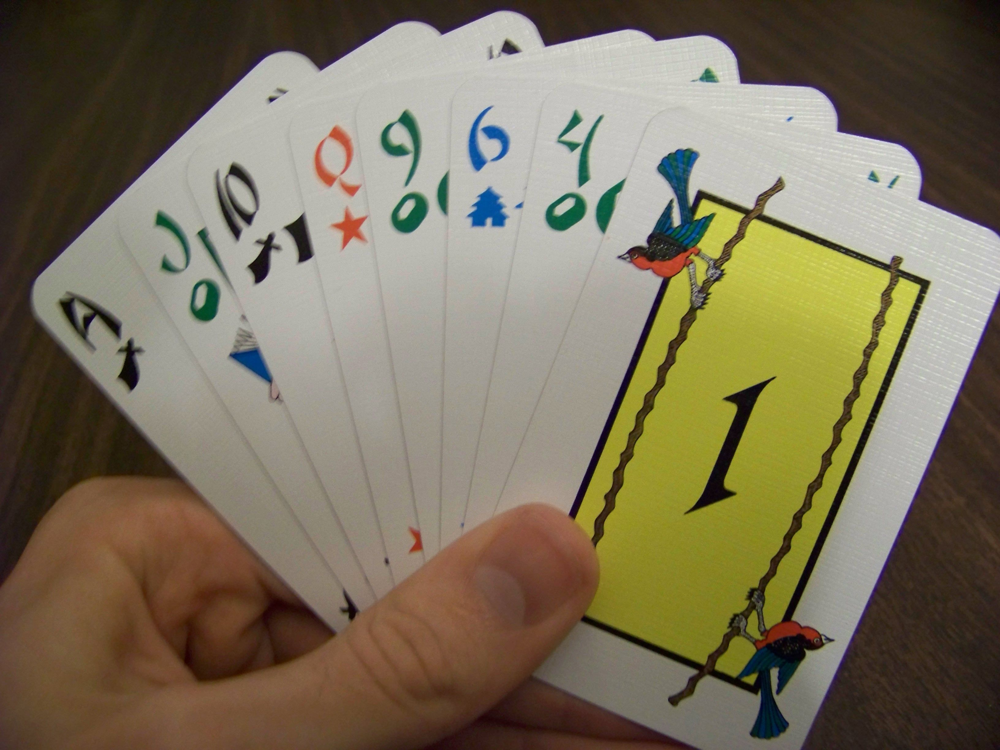

Host a Perfect Game Night

Helpful tips for your next board game extravaganza.
4/1/2017
Celebrating a year of partyhatpotato.com
Posted on 12/18/2017 by Tim Rice
On this day one year ago, I published my very first blog post, which makes today the first anniversary of Party Hat Potato! On this special occasion, even though I don’t usually like to write such personal posts, I thought it might be fun to take a look back on the year and do some reflecting.
As a bonus, I also decided to finally compose my obligatory "top games of all time" list. I actually love making lists, and people seem to enjoy reading them, so now is as good a time as any to reveal my favorite games. I decided to limit myself to ten games though, since, as anyone who’s read my articles knows, I have a hard time keeping things short…
Since this blog started, I’ve managed to publish 14 articles, 11 reviews, and 2 prototypes. In total, that adds up to over 40,000 words of content! It has me thinking that I should be writing a novel instead…
When I launched the website, my plan was to update it once a week, and I managed to do about half of that… But considering the fact that I went through two job changes and got married this year, I’m actually pretty happy with how much I was able to get done. Hopefully next year will be even better.
To be honest, I’ve never really stuck with a project for this long before, so the fact that I’m still enjoying this blog is a bit of a surprise. Having a creative outlet to explore my crazy ideas and engage with people who love gaming as much as I do has been a true gift, and I don’t plan on quitting anytime soon. Huge thanks to everyone who took some time out of their day to read a bit of my ramblings.
Just in case anyone missed them, I’ve linked to my 5 favorite articles from the year below. Then it’s on to the top 10.
I’ve been playing board games for pretty much my whole life, but board gaming wasn’t my main pastime until around 2013. That’s when I bought a few games to start my collection, and it spiraled from there. I can enjoy pretty much any type of game, but games that I can easily play with a large variety of people, and that have a lot of player interaction, tend to be my favorites. Out of the several hundred games I’ve played in my life, these ten are the cream of the crop.
Risk 2210 A.D. squeaks onto the list because it’s the first game I was ever obsessed with, and that nostalgia is strong. My friends and I used to throw all-night parties where the only thing we did was play this game (multiple 4 hour games in a row), and it was awesome. We even crafted our own expansions for it because we loved it so much, and I can’t say I’ve ever done that for any other game.
Obviously a lot of gamers have problems with the original Risk, probably for good reason. But if you actually enjoy Risk, as I do, this game is a million times better and the perfect next step. There are several aspects that give players a chance to formulate unique strategies, make interesting tactical decisions, and engage in negotiations. Not to mention you can nuke your friends, recruit specialized military commanders, and conquer the freakin’ moon. It just doesn’t get much cooler than that.
I have a lot of fond memories playing Carcassonne with all sorts of different people. Since it’s so easy to play, I can pull it out almost anytime for a guaranteed hit. Tile placement is one of my favorite mechanics, and I haven’t played any other game that has implemented it in such a clean, pure way. I still enjoy taking some time at the end of the game to admire the intricate-looking board that we all built together.
Every turn is an interesting visual puzzle and, depending on the group that I’m playing with, it can be either casual and relaxing, or savage and cutthroat (I prefer the second option of course). It hits the perfect balance between a family-weight casual experience and a strategic challenge.
I’ve always loved traditional card games. I learned how to shuffle very young so that I could play Euchre with my family, and in middle school my friends and I would bring a deck of cards to every lunch period. Out of all the card games I’ve played though, Tichu stands out as my favorite.
It’s a deep experience in a small package, and there are several twists which give players a ton to explore. It plays quickly, gives you a lot to think about, and it’s got fascinating intricacies that most card games don’t really bother with. It’s also one of the best partnership games out there, figuring out the best way to work together is a huge part of the game. I only wish I got the chance to play it more often.
Even though it’s not my favorite, I don’t think I’ve played any game that has impressed me more than Tales of the Arabian Nights. It’s not just a game, it’s also an astonishing work of art. Each playthrough is a unique and fantastical adventure, and I’ve played through it several times now and I haven’t even come close to experiencing everything this game has to offer.
I won’t deny that it’s finicky, extremely luck-driven, and takes way too long, but the fascinating stories that this game creates make all of that worth it. It isn’t a game about devising the best strategies or defeating your opponents, it’s about having a great adventure. As long as you go into the game knowing that, few games accomplish it better than this one.
Junk Art is the newest game on my list by far, and it shot into my top ten very quickly. I’ve always loved the idea of dexterity games, but for some reason the genre isn’t all that popular… So when I saw this game about stacking strange objects was being released I knew I had to try it, and when I did I was not disappointed.
It appeals to the part of your brain that just wants to play with blocks, and also the part that wants to see them fall down. There’s also a surprising amount of variety in the game, the designers came up with a lot of different games to play with the same great components. For extra laughs, try having a few drinks before playing!
Dominion is a brilliant and elegant design. It’s mechanics are simple enough for casual gamers to understand, yet it certainly works as a serious strategy game as well. When I first got the game, my friends and I used to spend the whole game night playing it several times in a row, and that’s saying something because I hardly ever play the same game more than once in a sitting.
This is a must-play for any hobby gamer in my opinion. Not only did it start an entire genre, it’s still the king of the deck-builders. It’s got tons of variety, opportunities to formulate unique strategies, and it plays quick. I couldn’t ask for much more.

I was completely blown away the first time I played Eclipse. It’s a deep and satisfying experience about cultivating an impressive space empire, but all the mechanics are clean and streamlined to the point where, after playing it once or twice, you’ll never need to refer to the rules again.
Every aspect of this game (exploring, building and upgrading advanced ship fleets, researching new technologies, space combat, diplomacy) all mesh together perfectly. It’s got that amazing feeling of progression that only long empire-building games can provide, and this is my favorite in that genre. I have a feeling this could be even higher if only I got the chance to play it more often.
I only have one qualification for what makes a great game: how much fun I have when I play it. Games don’t get much simpler than Telestrations, yet my cheeks end up hurting from laughter literally every time I play it. I am absolutely terrible at drawing (especially animals!) but seeing people get my drawings hilariously wrong makes this game even better.
It’s the sort of game where you don’t even have to keep score to enjoy it. The quirks of the players are what make the game, not the mechanics, and that’s pretty special when you think about it. I recommend making up ridiculous starting words instead of using the ones on the cards, it makes for much more interesting drawings.
If I may quote my own review of this game, "Galaxy Trucker reminds me of why I love this hobby so much." It’s the sort of experience that can only be achieved on the tabletop, and it’s truly a one-of-a-kind ordeal that every gamer should try at least once. Who doesn’t love the idea of building their own spaceship and watching it stand up to all the dangers of the galaxy? Sure, it might explode occasionally...but it’s the effort that counts.
This game is engaging in so many different ways. If you love puzzles, you’ll love fitting all the different ship components together efficiently. If you love playing fast, this game definitely gives you the chance to do that. Overall it’s a beautiful and unique game that hits all the right notes. It definitely isn’t for everyone, but it’s the perfect game for me.
There’s no game that inspires genuinely passionate reactions from people quite like The Resistance. Some of the most heated discussions I’ve ever had in my life have happened while playing this game, and there’s something wonderful about a game that is able to completely absorb players in that way. It’s a beautiful thing when the mechanics of a game are nothing more than enablers to fantastic player interaction, and this game does that perfectly.
The game isn’t great because of the mechanics, the game is great because it brings out a side of players that you don’t ordinarily get to explore. Reading each other, lying to each other’s faces, and solid deduction based on both hard and soft evidence are all organic parts of this easy-to-get-into experience. Every player reacts to this game differently, and I love pulling this out with new people and trying to figure out their unique quirks and strategies. To me, it’s more than a game, and it’s as near to perfection as I can imagine.
Finally, I want to send a huge thank you to everyone who read, commented, and shared my content throughout the year. This has been an amazing journey for me, and getting the chance to engage with readers has been one of the best parts.
I also have to give an extra special shoutout to all the people that took the time to print out my prototypes and give them a try. Whether you enjoyed them or not, I can’t tell you how much I appreciate getting feedback on my designs.
Here's to another year of gaming! Thanks for reading, and happy holidays!